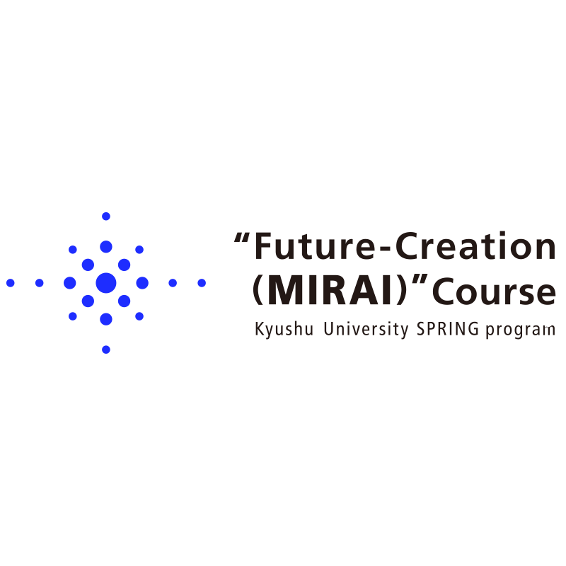

概要
K2-SPRING / Q-ENERGYMission
グリーンイノベーション分野で自由で挑戦的な博士研究を支援します。
Recruitment
募集情報は九州大学SPRINGプログラムのADMISSIONSへ接続します。
Archive
夏合宿、ニュース、デジタルパンフレットへの導線を保持します。
Design
2026年度ページの上品な学術的デザインを展開します。
学生・フェロー
2021–2026ニュース・資料
保存リンク- Phua Yin Kan氏らの論文：Making Black-Box AI Explainable for Polymer Design
- デジタルパンフレット：2025, 2024, 2023, 2022
- 夏合宿アーカイブ：2025–2022
Digital pamphlet 2025 · 2024 · 2023 · 2022
Partners
K2-SPRING · Q-PIT · Kyushu University